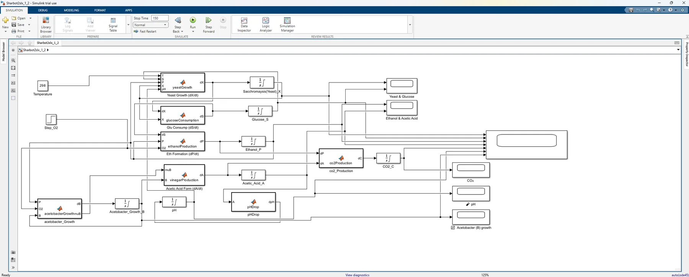
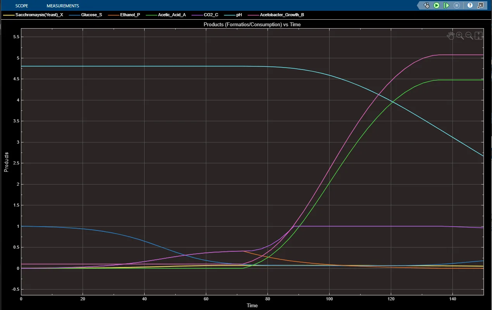
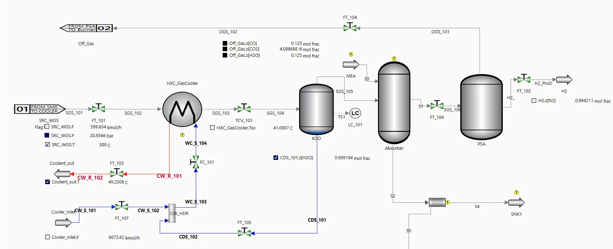

Every image on this page is a screenshot or plot from my own models. Click any image to enlarge it.
Closed loop: feed-pressure upset at 120 s, set point step at 600 s.
Personal project · Nov 2026
Python–AVEVA digital twin demonstrator
Connected Python to a dynamic AVEVA Process Simulation 2025 model through the .NET Scripting Interface, stepping the plant every 2 s in lock-step.
Velocity-form PI level controller with proportional action on the measurement, tuned with SIMC rules from first-principles plant gains (Kc 16.6, τI 264 s).
Peak level error after the upset fell from 6.5 cm to 0.8 cm; integral absolute error −86 %; identical results on repeat runs.
Every step logged to SQLite, with a live matplotlib dashboard and a Streamlit browser dashboard.
Graduation Project II · team of 3 · supervisors Prof. Turgay Pekdemir, Prof. Kadir Geliş
Power-to-Methane plant: DAC, heat integration and ML optimisation
Built the full AVEVA model of a 10,000 Nm³/h synthetic-methane plant: alkaline electrolyser, DAC-TVSA CO₂ capture, three-stage compression and four adiabatic methanation reactors (Peng–Robinson), starting from the team's Excel material balance.
Modelled the CO₂ capture unit as a two-bed, three-layer TVSA (alumina, silica gel, amine-silica) with LDF kinetics and dual-site Langmuir isotherms; cyclic steady state in about 10 cycles, ~505 kmol/h CO₂.
Designed a 14-exchanger network by pinch analysis (ΔTmin 10 °C), using reactor and compressor waste heat for feed preheating and DAC regeneration.
Trained an XGBoost surrogate on 363 simulation cases: 25 bar and 80 °C intercooling cut compressor power from 12.11 to 11.71 MW at 98.5 % CH₄.
Safety finding: the case-study data showed Reactor 1 outlet temperatures of 925–960 °C against a 620 °C catalyst limit. I traced it to the recycle split, which means the recycle loop needs tight control.
Graduation Project I · supervisor Dr Özlem Ateş Duru · Jan 2026
Biogas upgrading PSA: dynamic model for a digital twin
Raw biogas is about 60 % methane and 40 % CO₂. A pressure swing adsorption unit takes the CO₂ out on zeolite while two beds take turns adsorbing and regenerating.
Built a two-bed Skarstrom PSA model in AVEVA for CH₄/CO₂ (60/40) on zeolite 13X: LDF kinetics, extended Langmuir isotherms, Ergun pressure drop; 8 bar adsorption, about 1 bar blowdown.
Reached cyclic steady state and confirmed in MATLAB a global mass-balance error below 0.2 % after about 40 cycles; analysed CO₂ breakthrough and bed working capacity.
Set up NSGA-II optimisation of purity, recovery and energy as the next stage, to run through the Python–AVEVA bridge.
AVEVAPSAMATLAB
Design III · team of 5 · supervisor Prof. Dr. Musa Büyükada
Green urea plant design
A 1,000 t/d urea plant at Aliağa, İzmir, using captured CO₂ and green ammonia in the Bosch–Meiser process.
Built the full AVEVA simulation: CO₂ compression, NH₃ pumping, high-pressure synthesis loop, vacuum evaporation and prilling.
A teammate built the Aspen Plus version of the same plant.
AVEVAPlant design
Earlier AVEVA version: solar and wind with battery storage feeding the UF–RO train.
Clean-technology venture
SafaWater: off-grid water purification
A concept for communities without a reliable grid: ultrafiltration and reverse osmosis powered by solar panels. A battery carries the load after sunset, and a fuel cell takes over as backup when the battery runs low.
Modelled the power network and the UF–RO train together in AVEVA Process Simulation; the screenshot shows an earlier version of the power side, with solar and wind.
In this case the model turns 2,222 kg/h of feed water into about 1,050 kg/h of permeate.
AVEVAMembranesRenewables
Co-author
Bio-SMR hydrogen from cattle manure
Techno-economic and life cycle assessment of a hydrogen plant processing 1,045,400 t/year of cattle manure.
Six-step mitigation strategy (ORC exergy recovery, BECCS) reaching −9.17 kg CO₂-eq/kg H₂ and removing over 108,900 t CO₂/year.
TEALCABECCS

Simulink model: yeast and acetic-acid bacteria growth, ethanol, acetic acid, CO₂ and pH.
May – Jul 2025
Sharbot fermentation lifecycle model
A dynamic model of sugar → ethanol → vinegar in MATLAB/Simulink, with Monod growth, CO₂ release, pH inhibition and the switch from anaerobic to aerobic stages.

Product and pH trajectories.

Downstream train in AVEVA: cooler, knock-out drum, absorber and PSA.
Design I and II
Syngas purification and hydrogen recovery
Downstream separation for syngas from small-scale steam reforming of cattle manure: gas cooling, water knock-out, CO₂ absorption and PSA to a hydrogen product.